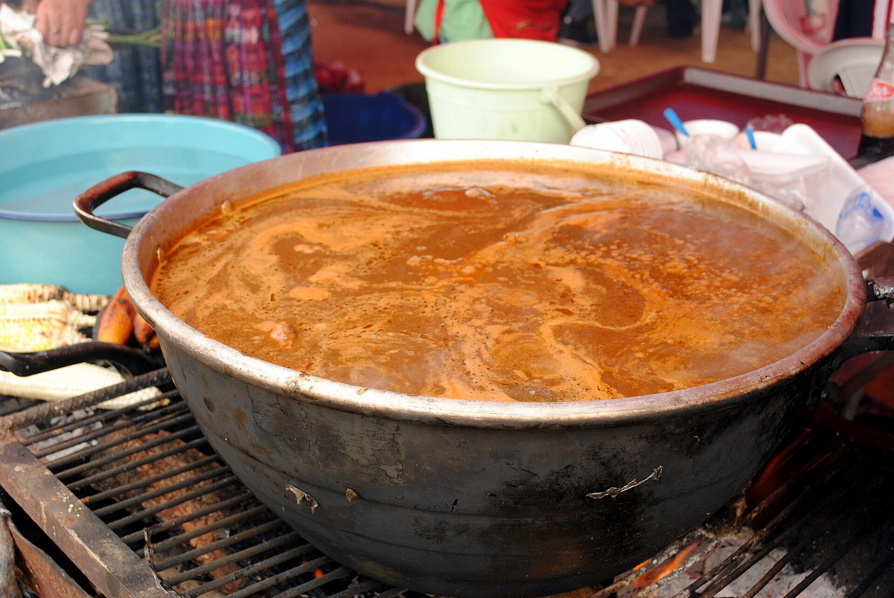
Pepián en la ollaPepián
Recado espeso de semillas y chiles tostados, tomate asado y verduras. Platillo de fiesta que se cocina con calma y se sirve con arroz y tortilla.
◆ El de los domingos
El CuacheSan Antonio Huista Ver la carta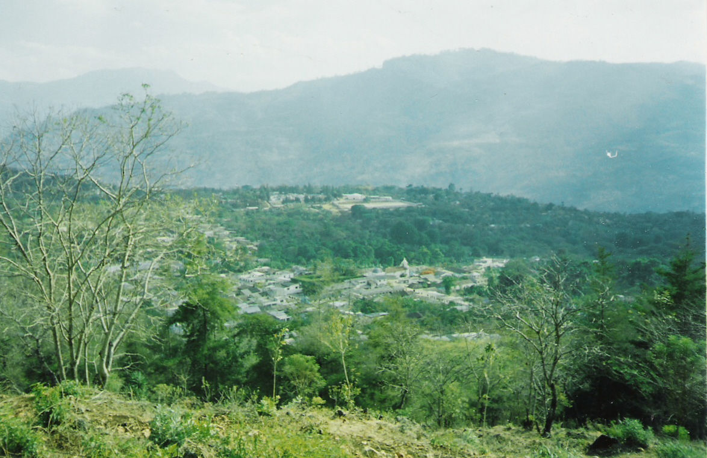
San Antonio Huista · Huehuetenango
Café y restaurante El Cuache: cocina de comal y leña, recados de fiesta y café de altura, servidos sin prisa como se sirve en casa.
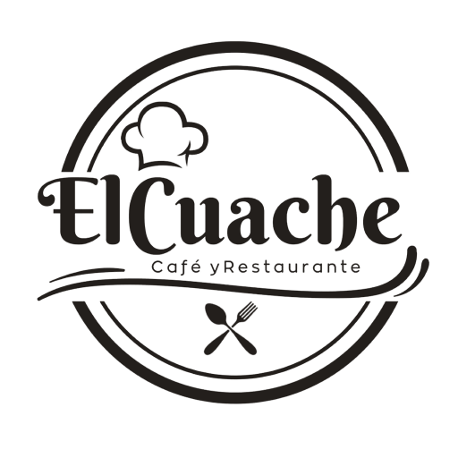
Bienvenidos a la casa
Café y Restaurante · San Antonio Huista
Un lugar para el desayuno largo, el café de la tarde y la comida de fiesta. Con sabor de pueblo, mesa compartida y la puerta siempre abierta.
Conoce nuestra cocinaEl pueblo
En San Antonio Huista la mañana huele a leña y a café. Aquí la marimba está hasta en el escudo del pueblo, las fiestas se viven en la calle y la comida se cocina sin prisa. El Cuache nace de esa mesa larga donde siempre cabe uno más.
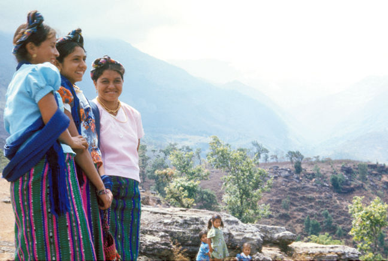
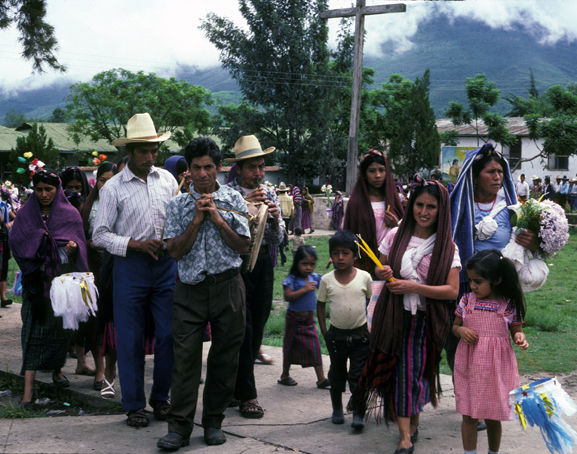
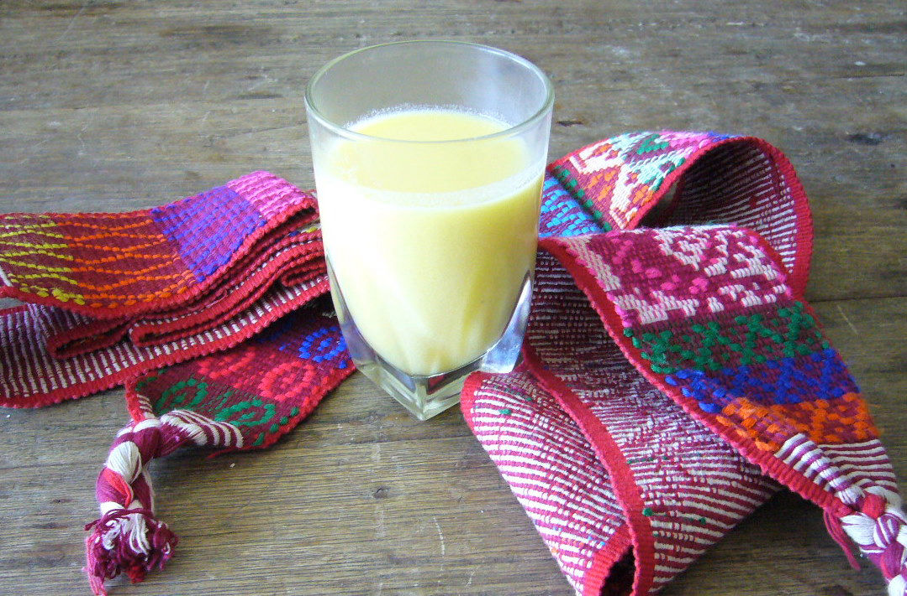
La cocina
Lo que se sirve en las ferias, en las bodas y los domingos de familia. Maíz, recado y paciencia.

Pepián en la ollaRecado espeso de semillas y chiles tostados, tomate asado y verduras. Platillo de fiesta que se cocina con calma y se sirve con arroz y tortilla.
◆ El de los domingos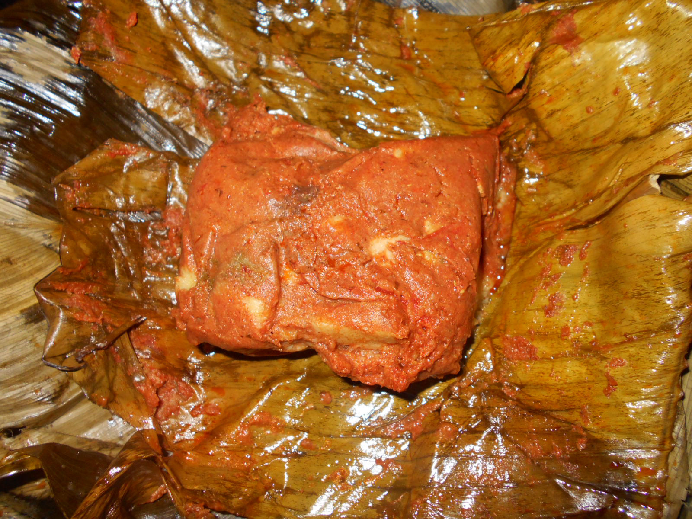
Tamal coloradoMasa suave con recado rojo de tomate y achiote, envuelta en hoja y cocida al vapor. El que no falta en Navidad ni en los sábados de tamal.
◆ SábadosCuando el maíz está tierno se vuelve atol, tamalito y rigua. Dulce, caliente y con canela: así se recibe a la visita.
◆ Temporada de elote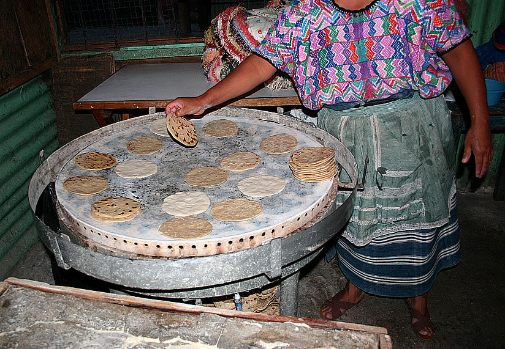
Tortillas en comalFrijol negro volteado o parado, tortillas recién salidas del comal y un poco de queso fresco. Lo de todos los días, hecho como se debe.
◆ Siempre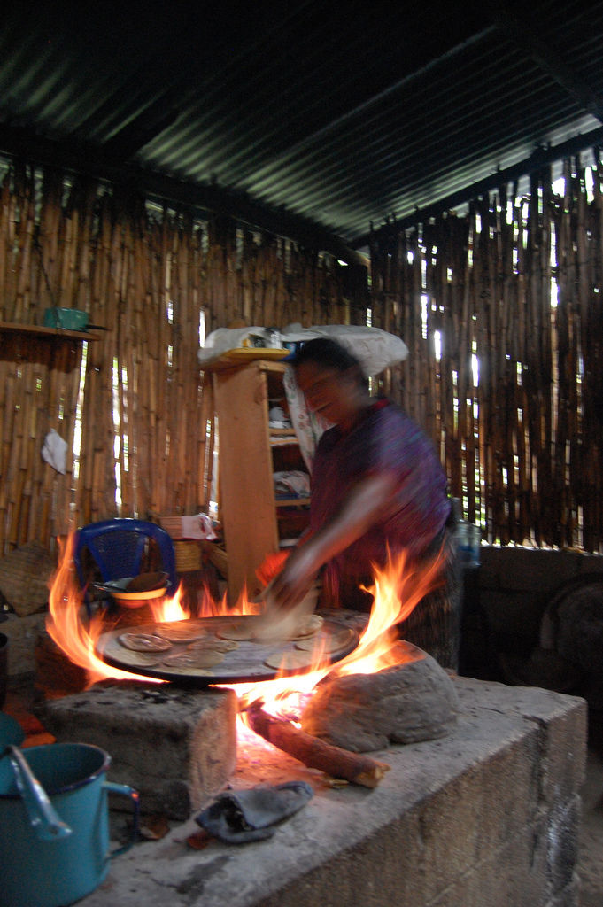
Tortillas palmeadas a mano, una por una, sobre comal de barro calentado con leña.
La carta de hoy
Fiestas y tradiciones
La feria patronal llena el pueblo de música, procesiones y comida en la calle.
11 al 13 de junio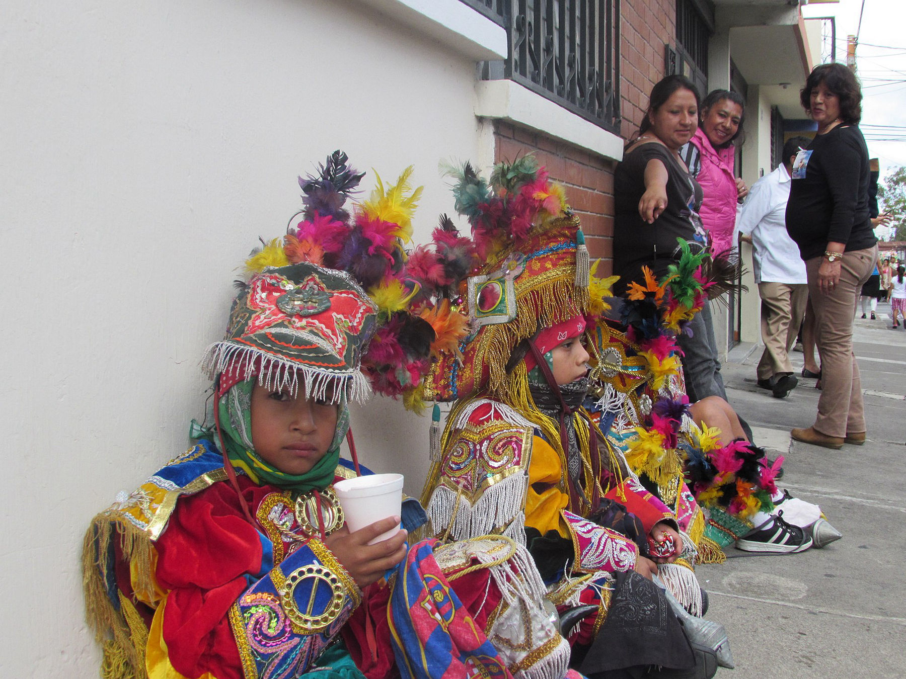
Danzas de feriaMáscaras, plumas y trajes bordados: las danzas tradicionales siguen siendo el corazón de las ferias en Guatemala.
Niños danzantes del Baile de la Conquista, Guatemala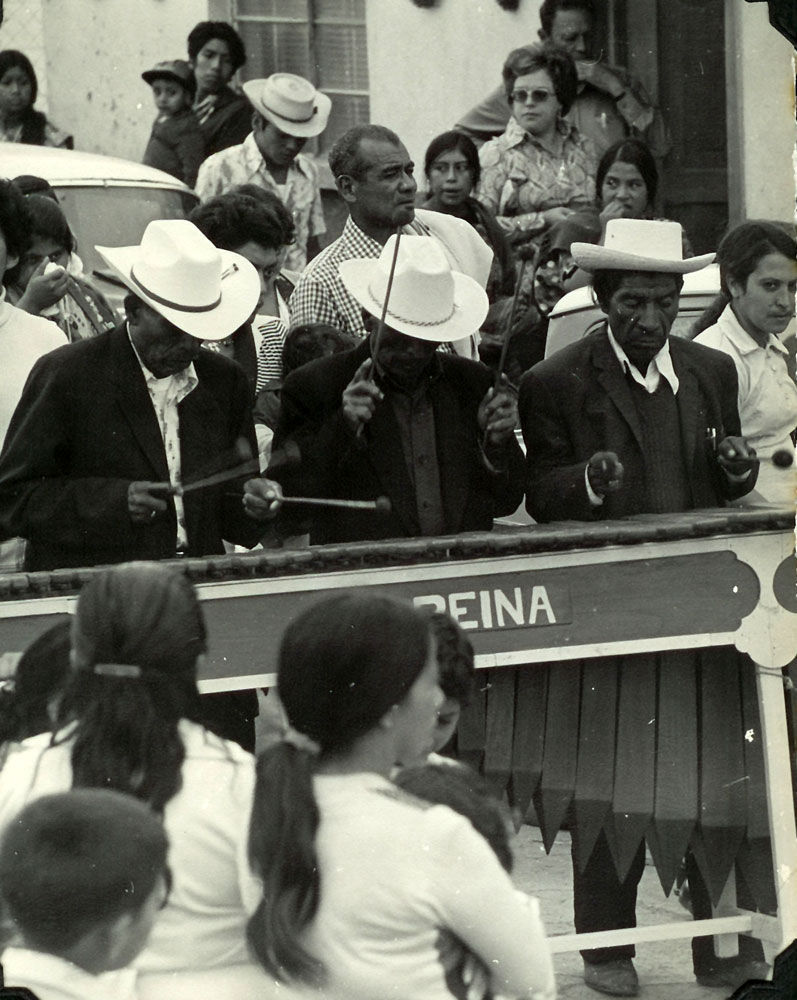
En el escudoEstá dibujada en el escudo de San Antonio Huista. No hay fiesta, boda ni serenata sin ella.
Marimba en GuatemalaEl sonido que anuncia la procesión antes de verla doblar la esquina.
Procesión en Jacaltenango, vecino de los Huistas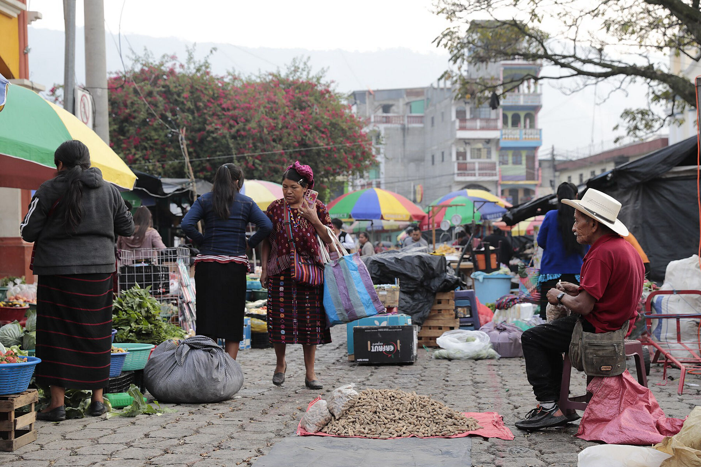
Día de plazaDe ahí salen nuestro maíz, las hierbas, el chile y el queso. Comprar en plaza también es tradición.
Mercado de Colotenango, HuehuetenangoLa feria titular cierra el año con rezos, cohetes y mesas llenas.
9 al 12 de diciembre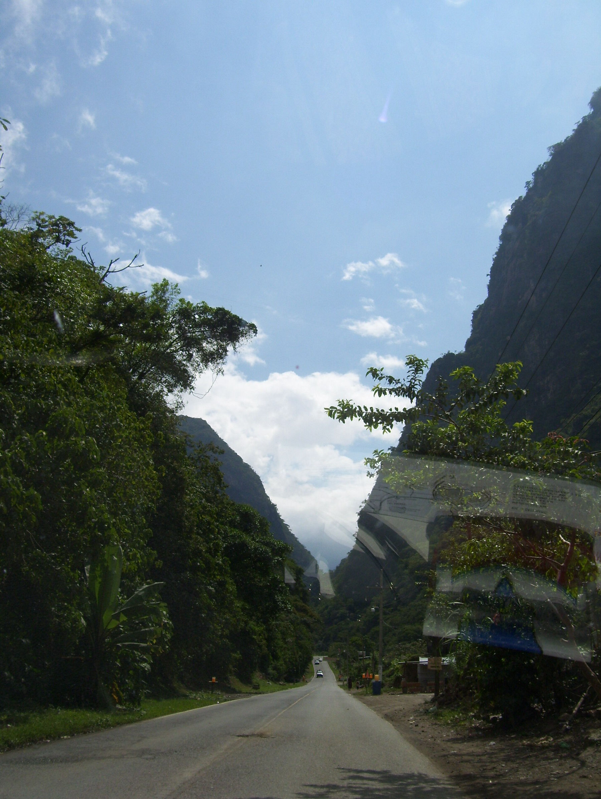
Café de altura
Huehuetenango es tierra de café, de montaña y de neblina. Por eso nuestra taza va fuerte en la mañana, de olla en la tarde y siempre recién colada.
Visítanos
San Antonio Huista, Huehuetenango, Guatemala.
Todos los días
7:00 a 23:00
Escanea el QR de tu mesa o pídele la carta a tu mesero.
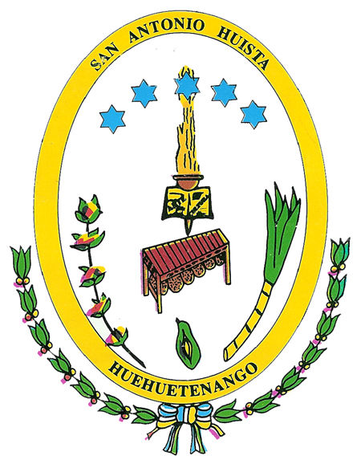
En el escudo de San Antonio Huista aparece la marimba: aquí la música y la comida van juntas.